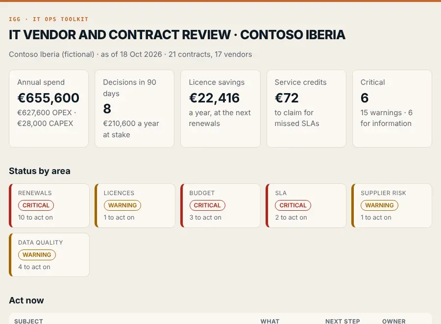

Un contrato con 60 días de preaviso se renueva solo otro año porque nadie miró la fecha a tiempo. El tracker que acompaña a este post lee el registro que el equipo ya tiene en una hoja de cálculo y encuentra esas fechas, también las de los contratos que ya se renovaron solos. Su demo usa una empresa inventada con 21 contratos de 17 proveedores, con fallos puestos a propósito.
Licencias, presupuesto y penalizaciones que nadie reclama
Se acaba el soporte de un firewall y nadie se entera hasta que hace falta un repuesto. Un complemento tiene 60 licencias y 34 usuarios mientras la suite principal tiene 12 puestos más de los comprados. Una partida va camino de acabar un 14% por encima. Un proveedor incumple su SLA, el nivel de servicio que firmó, dos meses seguidos, y nadie reclama la penalización.
Las comprobaciones cubren renovaciones y preavisos, licencias, previsión del presupuesto, SLA y penalizaciones, riesgo de proveedor y calidad de los datos. Los datos de uso convierten una renovación en una negociación.
Un calendario de renovaciones con aviso 14 días antes
El resultado es review.md para la reunión mensual de proveedores, actions.csv con responsable, fecha y el dinero en juego, y report.html con un calendario de renovaciones a 12 meses. renewals.ics lleva cada fecha límite de preaviso al calendario del equipo con aviso 14 días antes.
Cómo usarlo con datos reales
El registro se exporta a CSV y se adaptan sus columnas. Antes de cada revisión se añaden el gasto acumulado de finanzas y las cifras de SLA del mes.
De dónde sale
Nace de gestionar proveedores, renovaciones y presupuesto de IT, donde la fecha más cara de un contrato no es la de fin, sino la del preaviso.
¿Quieres llevarlo a tu entorno o adaptarlo a tu caso? Escríbeme y lo vemos.
Tech Career Lab · newsletter
¿Te ha servido? Cada dos semanas envío una idea práctica para perfiles IT: LinkedIn, proyectos, networking y procesos de selección.
Apúntate y llévate las 33 ideas →